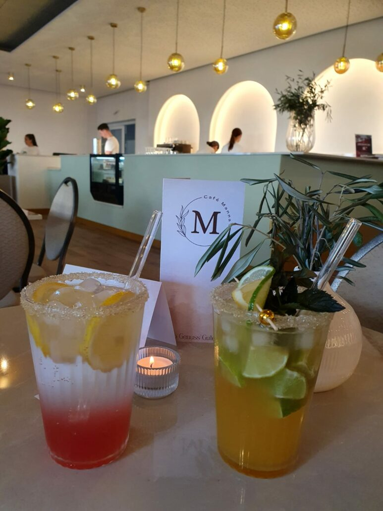

Essen & Trinken
Frisch gekocht, ohne Preisschild.
Am Abend gibt es warme Hauptgerichte, kalte und warme Getränke sowie Kaffee und Kuchen. Gekocht und serviert wird von Ehrenamtlichen.



Was es gibt
Die Karte wechselt. Diese Bereiche gibt es grundsätzlich jeden Abend.
Hauptgerichte
Warme Gerichte, zum Beispiel gegrillte Sandwiches mit Salat oder Pommes.
Getränke
Limonaden und andere kalte Getränke, Kaffee und Heißgetränke.
Kaffee & Kuchen
Du kannst auch einfach nur auf Kaffee und ein Stück Kuchen vorbeikommen.
Dazu gibt es immer wieder wechselnde Specials. Die aktuelle Karte liegt am Tisch.
Bezahlen
So funktioniert die Spende
- Auf der Karte stehen keine Preise.
- Am Ende gibst du eine Spende – in der Höhe, die du für angemessen hältst.
- Davon werden zuerst die laufenden Kosten des Cafés gedeckt.
- Was übrig bleibt, geht vollständig an das Hilfswerk CDH-Stephanus. Unter anderem werden damit acht Patenkinder in Indien und Uganda unterstützt.
Küche, Service und Theke werden von Ehrenamtlichen übernommen.
Wohin das Geld genau geht